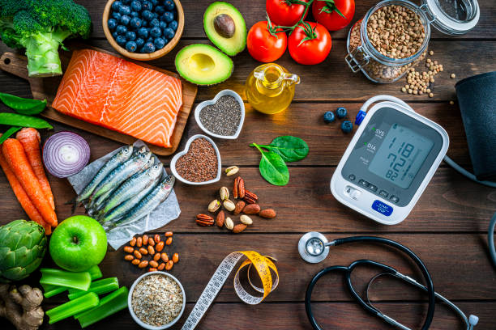
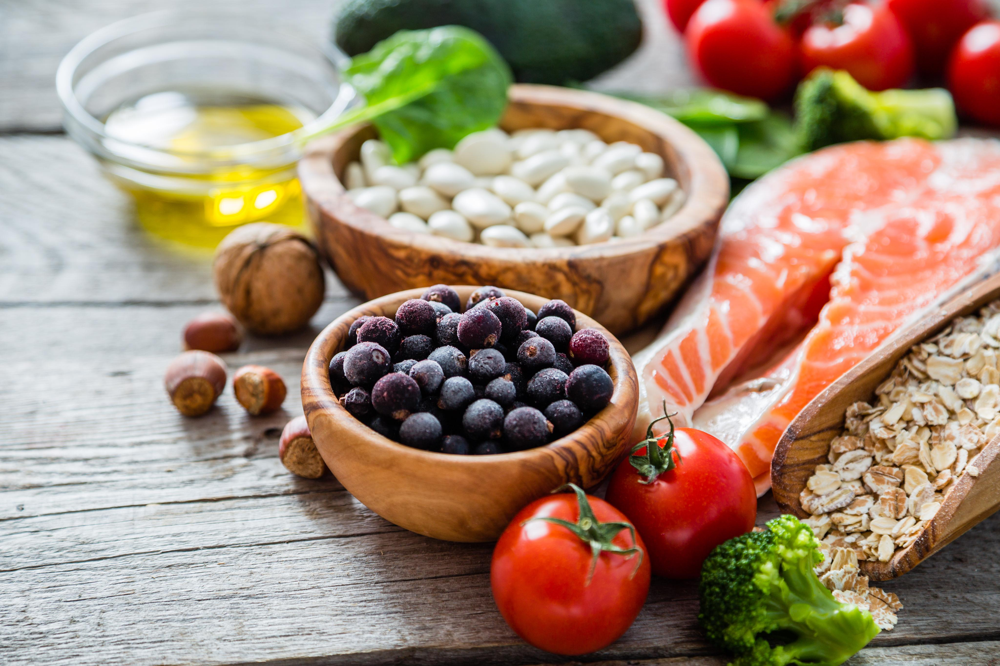
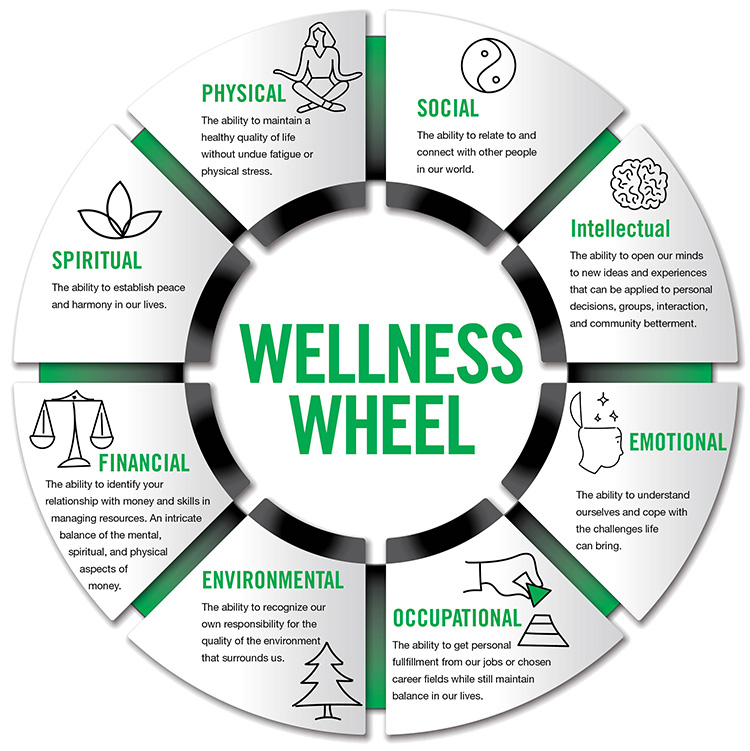
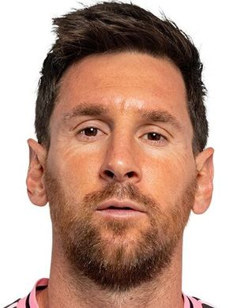
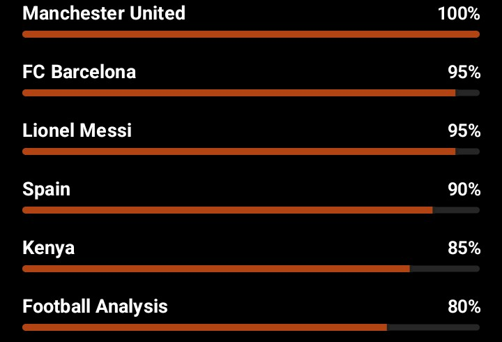

Welcome to my digital space. I am Eltone Lucas, a dedicated professional Web Developer specializing in both Frontend and Backend Web Development. My mission is to bridge the gap between complex computet language concepts and modern, engaging learning experiences. Beyond the classroom, I am a passionate coder and digital creator, constantly exploring the intersection of education, technology, and visual storytelling.This Profile Portfolio contain;
Education
Hobbies
Church
Health
Leadership
Football
Location
Contact
Visit Every Section Above And Get To Know Eltone Lucas Even More. Good Luck!
Education.
Academic history and certifications.
My Academic Journey and Certifications.
Early & Primary Education
Nyamanga Disii Primary School.
Nyamanga Disii ECDE Kids
My educational journey began in 2011 when I joined Early Childhood Development Education (ECDE) at Nyamanga Disii Primary School. This marked the beginning of an important chapter in my life, where I developed the foundation of my academic, social, and personal growth.
Throughout my years in primary school, I remained committed to learning and actively participated in various school activities. The school environment nurtured my curiosity, discipline, leadership skills, and determination to succeed. During my time at Nyamanga Disii Primary School, I had the privilege of serving as the School President, a role that helped me develop responsibility, confidence, and leadership abilities.
After years of hard work, perseverance, and dedication, I successfully completed my primary education in 2022. I sat for the Kenya Certificate of Primary Education (KCPE) examination and achieved an impressive score of 383 marks. This accomplishment opened the door to the next stage of my academic journey and remains one of the proud milestones in my educational life.
Looking back, my primary school years were filled with valuable lessons, memorable experiences, lasting friendships, and personal growth that continue to shape who I am today.
Secondary Education
Kanga High School
Kanga School main gate
My secondary school journey began on 5th May 2022 when I joined Kanga High School, one of the leading academic institutions in Migori County. Stepping into high school marked a new phase of growth, learning, and self-discovery as I prepared for greater academic and personal challenges.
Throughout my four years at Kanga High School, I embraced the opportunities and responsibilities that came with secondary education. I worked diligently in my studies, participated in school activities, and developed valuable skills in leadership, teamwork, discipline, and critical thinking. I was a member of Victor Class, a class of 58 students, under the guidance of our class teacher, Mr. Odoyo Wycliffe (Ochieng Nyando).
In addition to academics, I served as the Deputy Geography Club Chairperson, a leadership role that allowed me to contribute to the school's co-curricular activities while strengthening my organizational and communication skills.
My high school experience was shaped by the support of dedicated teachers, including our principal, Dr. Reuben Kodiango, PhD, whose leadership fostered a culture of excellence and ambition. The friendships, lessons, challenges, and achievements I encountered during these years helped shape my character and prepared me for the future.
On 21st November 2025, I successfully completed my secondary school education. I later sat for the Kenya Certificate of Secondary Education (KCSE) examination and attained an A- (Minus) grade with 79 points, a significant achievement that reflected my hard work, determination, and commitment to academic excellence.
As I look ahead to university and future opportunities, I remain grateful for the experiences and knowledge gained during my time at Kanga High School, which continue to inspire my pursuit of success and lifelong learning.
That is all about my education for now. University Education will be updated as soon as i report.
HOBBIES
THINGS I ENJOY DOING IN MY FREE TIME
Web Development & Coding
This is My Favorite Hobby.As an upcoming Web Developer, I spend the better part of my day learning Frontend web languages like HTML,CSS and JAVASCRIPT.From there i'll upgrade to backend languages like PHP and SQL.This Personal web portfolio is purely my work.
Football
My second hobby is football. Im both a fan a football player. I had played for Nyamanga U15. I am a fan of different Football Clubs and National Teams.See More In Football Section
Watching
I sometimes pass time by watching TV programmes,series & movies. My top TV programmes are Nat Geo Wild, Football, both live and replay matches and Daily News. I do watch series and Movies. The Day Of Jackal Is My Top Series.
Gaming & Puzzle Solving
I play both physical and computer games/puzzle. My best is Rubiks Cube Solving. I also play eFootball and Call Of Duty.
Hobbies are part and parcel of human health hence very important.
CHURCH
My Spiritual Journey & Involvements.
Spiritual Growth
My faith journey is a cornerstone of my life, guiding my values, community service, and personal discipline.
I am a proud Catholic faithful of the Diocese of Homa Bay. The Diocese of Homa Bay plays an important role in nurturing my spiritual growth and guiding me in living according to the teachings of Jesus Christ. Through its pastoral programs, liturgical celebrations, and evangelization efforts, the Diocese helps strengthen the faith of Catholics and promotes Christian values within society.
Under the leadership of Bishop Michael Cornelius Otieno Odiwa, the Diocese continues to provide spiritual direction, encourage community service, and foster unity among the faithful. The Diocese is committed to spreading the Gospel, supporting education, promoting peace, and addressing the spiritual and social needs of the people.
As a member of the Diocese of Homa Bay, I am grateful for its dedication to faith formation and its mission of building a vibrant Catholic community rooted in prayer, service, and love for God and neighbor. ✝️ "One faith, one family in Christ, united under the Diocese of Homa Bay."
St. Joseph Mirogi Deanery
I am a proud member of St. Joseph Mirogi Deanery, a vibrant deanery within the Catholic Church that plays an important role in strengthening the faith and unity of its parishes. The deanery serves as a link between the Diocese and the local parishes, promoting collaboration, pastoral care, and the spiritual growth of the faithful.
Under the leadership of the Dean, Rev. Fr. Joseph Mark, St. Joseph Mirogi Deanery coordinates pastoral activities, encourages evangelization, and fosters fellowship among Catholics. Through its various programs and initiatives, the deanery helps deepen our understanding of the Gospel and strengthens our commitment to Christian values.
As a member of St. Joseph Mirogi Deanery, I am grateful for the guidance, support, and opportunities it provides for spiritual growth, worship, and service to the community. The deanery continues to inspire me to live my faith actively and contribute positively to the Church and society.
St. Gabriel Catholic Church Of Our Lady Of Sorrows ~ Karungu Parish
I am a proud member of St. Gabriel of Our Lady of Sorrows Karungu Parish. My parish is an important part of my spiritual life, providing a place where I worship God, grow in faith, and participate in the life of the Catholic Church. Through the celebration of the Holy Mass, the Sacraments, and various pastoral activities, the parish helps me strengthen my relationship with Christ and live according to His teachings.
Under the spiritual leadership of Rev. Fr. Tobias, St. Gabriel of Our Lady of Sorrows Karungu Parish continues to guide the faithful in prayer, evangelization, and service to the community. The parish fosters unity among its members and encourages us to live out the values of faith, hope, and charity in our daily lives.
As a member of St. Gabriel of Our Lady of Sorrows Karungu Parish, I am grateful for the spiritual nourishment, guidance, and sense of belonging that the parish provides. It inspires me to deepen my faith, serve others, and remain committed to the mission of the Catholic Church.
✝️ "A parish family united in faith, worship, and service to God."
St.Joseph Gunga Sub-Parish & St. Antonio Okiro Catholic Church
I am a proud member of St. Antonio Okiro Catholic Church, a Christian community within St. Joseph Gunga Sub-Parish and St. Gabriel of Our Lady of Sorrows Karungu Parish. My church is the center of my spiritual life, where I gather with fellow faithful for prayer, worship, and participation in the Sacraments.
Through St. Antonio Okiro Catholic Church, I continue to grow in faith, strengthen my relationship with God, and learn to live according to the teachings of Jesus Christ. The church fosters unity, love, and service among its members, encouraging us to support one another and actively participate in the mission of the Catholic Church.
As part of St. Joseph Gunga Sub-Parish and St. Gabriel of Our Lady of Sorrows Karungu Parish under the leadership of Rev. Fr. Tobias, our church contributes to evangelization, faith formation, and community development. I am grateful to belong to this faith community, which continues to guide and inspire me in my spiritual journey.
St. Antonio Okiro Catholic Church is more than a place of worship to me; it is my spiritual home, where faith is nurtured, friendships are formed, and God's presence is experienced in a special way.
✝️ "Rooted in faith at St. Antonio Okiro Catholic Church, united in Christ through St. Joseph Gunga Sub-Parish and St. Gabriel of Our Lady of Sorrows Karungu Parish."
God First In Everything
Prayers matter. Always be Prayerful.
Health
HEALTH
My Health & Wellness Journey
Good health is one of the greatest blessings in life. This page highlights my commitment to a healthy lifestyle.
Stay Active Move your body every day
Eat Healthy Fuel with nutrients

My Health Goals
Maintain Healthy Body Weight
Stay Physically Active
Improve Fitness Levels
Eat Nutritious Foods
Get Enough Sleep Every Night
Reduce Stress & Stay Positive
Physical Fitness
I stay active through regular exercise and football.
Nutrition
I eat a balanced diet that provides energy.

Sleep & Rest
Adequate sleep is essential for recovery.
Mental Wellbeing
A positive mind leads to a positive life.

My Health Snapshot
Health Factor
My Status / Goal
Water Intake
2–3 Litres
Exercise
3–5 Days / Week
Sleep goal
7-8 Hours
Diet
Balanced Diet
Mindset
Positve & Focused
My Health Overview
Age 20 Years
Height 173 cm
Weight 65 kg
BMI 21.7 (Normal)
Favorite Sport Football ⚽
Football
⚽ FOOTBALL
My Football Portfolio
Explore the combined legacies and tactical brilliance that
define the worlds of my supported teams—Manchester United,
FC Barcelona, Spain National Team, Gor Mahia FC and
Nyamanga FC.
Iconic Club & Country Showcases
Man Utd
20x League Titles
FC Barcelona
5x Champions League
Spain
2010 World Cup
Gor Mahia
20x Kenyan PL
Nyamanga FC
Regional Champions
Migori Youth FC
Regional Champions
The Legendary Lineup

Messi
Agility, Vision, Precision
Attributes: 95
Yamal
Pace, Dribbling, Creativity
Attributes: 89
Fernandes
Passing, Leadership
Attributes: 90
Pedri
Control, Intelligence
Attributes: 88
Fan Insights & Strategic Legacy

Memorable Club Moments
Opponent
Year
Result
Man Utd vs Bayern
1999
2-1 (Win)
Spain vs Netherlands
2010
1-0 (Win)
Barca vs PSG
2017
6-1 (Win)
Leadership
Leadership Roles
Class Prefect 2019/2020
Nyamanga Disii Primary School~Class 7
It prepared me for the school president role later.
School President 2021/2022
Nyamanga Disii Primary School
Developed responsibility and public speaking skills.
Deputy Geography Club Chairperson 2024
Kanga High School F3
I used to get ready for my major role as the school chaiperson
Geography Club Chairperson 2025
Kanga High School F4
Managed club events and collaborated with peers.
Leadership is a god-given gift.
Location
Physical Address
Nyamanga Village, Sori-Karungu 27-40401 Karungu, Kenya
Administrative Hierarchy
Migori County → Nyatike Sub-County
Kachieng' Division → West Karungu Location
Gunga Sub-Location → Nyamanga Village
Coordinates: -0.8445° S, 34.1558° E
Visit the Maps for my location
Contact Me
I'd love to hear from you. Feel free to reach out through any of the platforms below.
Whether you have a project, a collaboration opportunity, a question, or simply want to say hello, I am always happy to connect. I strive to respond to messages as quickly as possible.